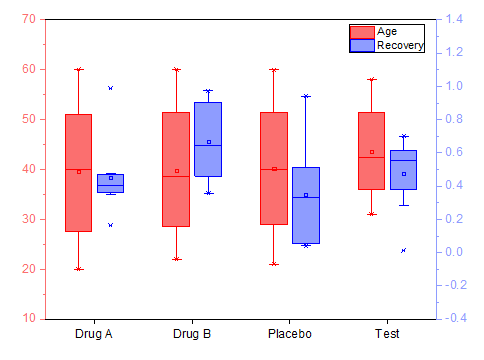

2Y軸 ボックスチャート
2Ys-Box-Chart

必要なデータ
列の属性に関係なく、複数列データが必要です。
選択列のうち最初の列が1番目のレイヤにプロットされ、次の2つの列は順番に2つの異なるレイヤにプロットされます。
グラフ作成
- データを選択
- メニューからを選択します。
テンプレート
2Ys_Box.otpu
このテンプレートは、Originのプログラムフォルダに保存されます。
ノート
- 同じレイヤのすべてのボックスプロットは同じスタイルです。ボックスの色はY軸の色に従います。
- このようなグラフの作成で複数列を選択すると、列のロングネーム（なければショートネーム）がX軸ラベルとして使用されます。
- レイヤ2はレイヤ1にリンクしています。また、レイヤ2のX軸はレイヤ1のX軸にリンクしています（直接 1:1）。
- 同じX位置の2つのボックスの間隔は、第1レイヤの第1プロットに関連する作図の詳細（プロット属性）ダイアログの間隔タブの、重なり(%, 負の値は間隔)オプションで制御します。